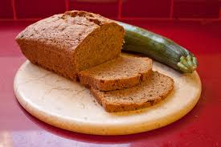

Zucchini Bread
Back to main page

Cook time = 1 hour at 350 F
Need: 2 bread bans and parchment paper
- 2 cups flour
- 1 1/2 cup sugar
- 2 tsp baking soda
- 1 Tbsp cinnamon
- 1 tsp salt
- 3 lg eggs
- 2 cups grated zucchini
- 3/4 cup vegetable oil
- 1 Tbsp vanilla
optional additions and substitutions
- swap out flour for gluten free choices
- baking powder
- nutmeg
- walnuts
- pecans
- raisins
- craisins
- chocolate chips
- ginger
- cloves
- Line pans with parchment paper.
- Mix dry ingredients.
- Mix wet ingredients.
- Combine wet and dry ingredients and
pour into pans.
- Check doneness by firmness in center of loaf or
inserting a knife. The knife should come out clean.